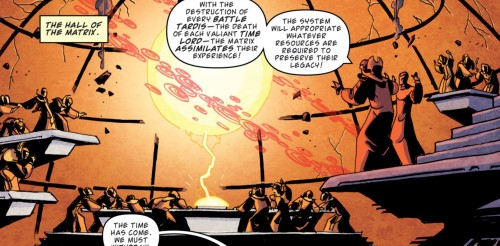
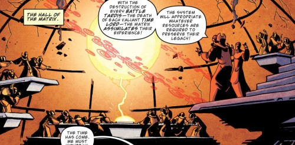
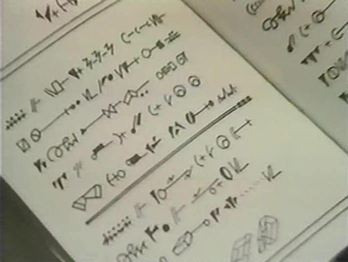
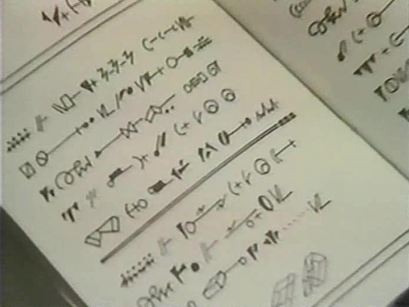

THE EYE OF HARMONY
The Center of the Web of Time
the hitching post of Chronology, that which does not flux nor wither nor change its state."

TABLE OF CONTENTS

Click on paragraphs to see color coding for sources

EYE OF HARMONY
Rassilon's Star, the Caldera, the Time-Sun, the Eye of Time, the Black Hole of Rassilon
The Eye makes up the largest structure on Gallifrey - so large that it needs its own fold in space micro-universe to contain it. This chamber is known as the Caldera and it is located in the Panoptican Vaults far beneath the Panopticon assembly hall in the Capitol. The name Panopticon is derived from the Eye's ability to observer and 'see' all of space and time.
Significant temporal paradoxes associated with Inner Time can cause fluctuations in the artron power output of the Eye of Harmony, enough to endanger TARDIS travel. It doesn’t take much of a weakness of the power output of the Eye to disable almost all of Gallifrey’s defenses (including the Validium). Even the transduction barrier would begin to fail. The Eye of Harmony can be drained remotely with a stellar manipulator. But the manipulator would need to be in continual operation to disable all of Gallifrey’s time travel facilities. The destabilization of the Eye of Harmony would cause Gallifrey to turn into antimatter, creating a quasar that would destroy a hundred worlds.
This weapon was created to be used only during the Last Great Time War in Heaven. However, officially, use of the D-Mat gun is forbidden from the moment of its creation, and instructions for its construction are one of the most well hidden files within the Matrix. Some Time Lords considered the Moment to be the most dangerous weapon in the Universe. Fortunately the Moment rarely allowed itself to be used.
THE SPACE-TIME VORTEX - the Astral Vortex, the Fifth Dimension, the Bifrost
Unlike the first four dimensions, the fifth dimension is collapsed and folded into a spiral whose surface is the size of an atom. This vast ever shifting trans-dimensional time spiral functions as the axis of the Vortex. It encompasses the universe and serves as a foundation for all points in space and time. All matter, energy, and even darkness are blended into this spiral. Different parts of this infinite strand of energy directly map to different areas of space and time in normal space. The Eye serves as an anchor for the Web of Time (the continuity and causality of the Universe) and it probably sits at the exact center of the Vortex. This Vortex Core can be accessed with the Spiral Chamber. The tightest coils of the time spiral are in the future, and the widest loops are the past. The tighest coils of the time spiral, found a the end of the Humanian Era, can destroy even a TARDIS. Some stretches of the Vortex, known as oceans, are barren because the corresponding area of Normal Space is empty. Beneath the surface of the Vortex is the substrate where hyperspace and shuntspace (both used by various space powers to travel faster then light) can be found as well as lifeless depths of the darker strata. Not all of these areas of the Vortex have been charted by the Time Lords. When plotted out in three dimensions by Time Lord scanners, the Vortex is usually depicted as a glittering blue void with gold highlights (But it can look like any of the opening sequences of Doctor Who).
The Fifth Dimension nature of the Vortex means that it intesects the first four dimensions of Normal Space though interstital space at an angle determined by non-Euclidean geometry. Thus this interstital vortex encompasses all universes. Though the forces of the interstital vortex are such that most who who try to access these other universes will be torn apart down to the molecular level. By containing these universes the vortex limits the creation of new alternate timelines and parallel universes.
The Vortex is filled with a background radiation of artron energy generated by every sapient in history. Their observation and perception helped crystallize the Web of Time by collapsing the quantum probability waveform. Because of this etheric mental energy, it is sometimes known as the Astral Vortex. The collective illusion it forms functions as the universe's subconscious, making the vortex a dimension of pure thought with a complexity that borders on sentience - in fact the Faction Paradox believe that it is sapient and refer to it the Loa).
There is no air pressure within the Vortex and the time winds are such that they would destroy any normal matter by aging it until complete structural breakdown occurred. A planet with a G-type atmosphere would only be habitable for a few hours before the time winds started tearing the world apart. While most unprotected humanoidswould (or Daleks) die in seconds if immersed in the Vortex some Time Lords can use their symbiotic nuclei to survive in the Vortex by using a technique called Vortex-Walking.
The creation of the Vortex made it possible for the Time Lords (and any other species) to travel in time and space by moving out of Minkowski Space and integrating into the Fifth Dimension. A TARDIS generates a wormhole to traverse the Vortex. A TARDIS be a danger to the Vortex. A mortally wounded TARDIS could rip a hole in the vortex as it traveled and the destruction of a fleet of 1700 timeships could rupture the Web of Time permanently. Using the Vortex to journey through space and/or time leaves the traveler lightly irradiated with artron energy. The first such exposure permanently links a Time Lord’s symbiotic nuclei to the Vortex.
But even with a symbiotic nuclei Vortex travel isn't entirely safe. There are freak surges and discharges of time spillage called time spikes that come from and go nowhere. Other dangers include quantum mirages, substrate diversions in the Vortex, and crossing the Time Spiral boundary. It is also possible (but very rare) for a TARDIS to become trapped in a fractional dimension between the Vortex and N-Space. If a TARDIS was to be trapped between a vortex rupture and a subspace infarction it would break up. The Mandragora Helix inhabits one of the uncharted areas of the Space/Time Vortex. The Helix is a spiral of pure energy radiating outwards in ways the Time Lords don't fully understand. This energy is sentient and has a relationship to the position of the stars.
The helix is not the only life form to make the Vortex its home. There are many chronovores and other creatures that can be found there including Eternals, Pantophagens, Reapers, Time Roaches, Time Vortex leeches, the Vormatoda, Vortex Dwellers, Vortex Wraith, Vortisaurs, and some of the Great Old Ones, most notably the Guardians of Time.

THE WEB OF ALL-TIME
The Web of Universal History, Time, Causal Nexus, the Great Time Line
While the Time Lords view the Great Time Line of History (aka the Web of Time) as high-order mathematical structures, these processes are complex enough to be regard as living beings. Indeed the theory that led to their comprehension of the Vortex is know as the Idea of Living Matter. Indeed some Time Lords (and all members of Faction Paradox) view history itself as a sentient being or beings (sometimes called Loa). The Web is even capable of affecting the minds of a Time Lord. It should also be noted that the creation of the Web of Time also create Anti-Time, the opposite of the positive time. This timeless shadow of the Web of Time is just as destructive to causality and continuity as anti-matter is to matter. The theory of Anti-Time was viewed by the Time Lords as mere superstition for millions of years.
The Eye (and thus all of Gallifrey) sits at the center of the Web of Time and anchors all of its threads. It serves as an anchor for the continuity and causality of the Universe. Because all of history revolves around it, this pivotal black star was often known as the Time-Sun. The Time Sun probably sits at the exact center of the Vortex (aka the Vortex Core). By stabilizing the temporal geometry of the Universe the Eye was in turn stabilized in an eternally dynamic equation against the mass of Gallifrey. Due to density of strands in the Web of Time, it is unhealthy for even a Time Lord to stand too close to the Eye.
The Eye mapped out every inch of the Spiral Politic and define the rational laws upon which it functions. The closer a world of events was to Gallifrey (and its Eye) the more pivitol and ‘fixed’ its role in cosmological history the event is. The further away, the more in flux that world of events are. Some areas of the Web have fault lines. These weak points can allow entities like the Gaurdians to influance Normal Space. In mapping out the cosmos the Time Lords rationalized it and created a permanent version of space-time. In conjunction with the Web of Time, the Eye of Harmony was used to define the physical and temporal laws of space and time. All of this is probably accomplished using the Skasas Paradigm (aka the God Maker or the Universal Theory) which unlocks how the Universe works, giving the user complete control of the basic building blocks of the universe (time, space, matter).There is speculation that whatever is written in Worshipful and Ancient Law might become the laws of science throughout the noosphere of the Time Lords, and that this might be the master control mechanism for this system.
The Intuitive Revolution led to Rassilon gaining the power to destroyed Irrationality and Magic - not only after the revolution, but, retroactively, before the revolution. Cacophony (irrationality and magic personified) was banished from the Universe. Lokic fields cancel out almost all of the odic energies of the Universe. This might have caused the destruction of flying horses, dragons, unicorns, faeries, slithy toves, bread-and-butterflies and other illogical creatures. Psionics are the only quasi-magical phenomenon that survives. The psionic network created by telepathic beings across the cosmos was carefully monitored by the Time Lords to serve as an early warning system in case the ancient and more powerful magic from before the anchoring manifested again. The Eye might have even been used to influence the evolution of species throughout the cosmos so that most resembled the Gallifreyans.
The Eye of Harmony gained its name because it sits outside History and watches the rest of the Universe. The Gallifreyan Noosphere (the range of understanding and data that is defined by a culture's physical, perceptive or comprehensive capabilities) extends to the observational and broadcast limits of the Eye of Harmony. Specially loomed Mappers charted out the Noosphere, defining the Epoch of Mass Time Travel (EMTT), often known as the Spiral Politic. Time Lord Way-Stations are located at various points in space and generally have several Time Lords assigned to them. Using a temporal chamber, the structure of the whole planet of Gallifrey became a bio-system in which the biodata of the Gallifreyans acts as a planet sized receiver and processor of the data from matrix facets and deep-time telescopes that collect information from the rest of the universe. Vortiscopes examine the vortex and locate that coordinates of any space time dislocations where someone has changed history. The Eye can easily detect and locate any attempt to 'freeze' time anywhere in the Universe.
The data from matrix facets can be processed at a rate of billions of years every nano-second and be projected on a trans-temporal event viewer known as the Relativity Map. Using the Relativity Map, the Time Lords can (within the limits of the Laws of Time) observe almost any event in time and space. Beyond these limits they can predict almost any event. The higher-order mathematical structures of History can be predicted by powerful computers and then be presented in an infinity chamber. The infinity chamber in the Citadel is capable of decrypting the universe and predicting the course of history.
The Gallifreyan Noosphere reaches from around 3,500 years after Event 0 (the Big Bang) to the frontier of time, at the time of the story Frontios (10,000,000 AD, when the last Gallifrey is destroyed in the Time War) The noosphere of the Gallifreyans also covers most of Space , all the way out to the asteroid Hindmost. It should be noted that there are areas within the Spiral Politic that the Time Lords can’t observe or penetrate. It is possible that some other power, with their own Eye, sits in distant future beyond the Time Lord Noosphere.
The Time Lords' ability to manipulate the weak nuclear force, the gravity force, and the time force, allows the Eye of Harmony to actually alter the Web of Time. The time force is another force in addition to electro-magnetic, weak/strong nuclear and gravity forces. The time force is known to be many times more powerful then gravity. It should be noted that their control of the weak nuclear force only extends to the limits of this cluster of Galaxies (the Noosphere of Time Lord understanding is much larger).
Since the its reach is defined by the broadcast limits of the Eye or Harmony, the Gallifreyan Noosphere sets an effective temporal barrier limit for legal TARDIS travel. There are about 100 billion G type (Earth-like) worlds within the space-time travel range of the TARDIS. In practice most Gallifreyan Capsules are unable to make it to the edge of knows space without being specially engineered. A similar limit exists on traveling forward in time. Outside the Noosphere the laws of physics are in a state of flux and still forming. Time works differently after the point when the universe ceases to expand and begins to collapse and even the TARDIS instruments have difficulty pinpointing the current date. Very few timeships have every left the EMTT and entered the Deep Time beyond, and even fewer have returned to speak of it.
While small changes have only short term affects on the space-time continuum, large changes, or changes that occur at temporal nexus points, will create timelines that achieve 'escape velocity'. These time fissures threaten to 'fold Time in on itself,' cutting the Universe's remaining lifespan in half. In most cases, such events take one or two centuries of relative time to fully form, giving the CIA time to locate the coordinates of the space time dislocation with their vortiscopes and prepare a planned response.However, If the Nexus Point is already time locked as a fixed point in time and then history is changed at that point, then time would immediately freeze and collapse as reality began to die.
If another species causes a temporal distortion in the Web that creates an aberrant Timeline then an Interventionist (usualy a CIA agent) is sent to prevent the species from causing further damage and correcting history. The Doctor believes that countless millions of world have been saved from death by the Time Lords' policing.
If that Time Lord doesn't return then the Time Lords (again, probably the CIA) has that Time Lord's personal timeline effectively shut down by removing that world's timeline from history (apparently to be replaced by one where the temporal damage never happened in the first place). This prevents the missing Time Lord from being used to damage the rest of the Web. The aborted timelines are attached, in a spoke like pattern, to the Axis. The Axis is sealed off from space and time within the no where of inter-dimensional space. It has also shifted a few seconds out of phase with normal time.The Daleks consider the Axis to be the Time lords greatest secret. An Overseer from the Grand Presidium of the sideways dimension of Guardus supervises the Axis. The consciousness of this Overseer stabilizes the structure. The Communications Tower in the Capitol the standard method of contacting the Overseer and even the Coordinator of the CIA is unlikely to have actually visited the Axis. Each of these truncated aborted timelines is trapped in a giant loop using a Hysteresis Generator. There are portals which allow access to the truncated timelines. While most of the timelines in the Axis are created by the Time Lord meddling, some are produced by other species. Shortly before the Time War there were million truncated timeline stored in the Axis and 1000 versions of Gallifrey. But by the end of the Time War over 100 billion alternate versions of history will have been created. The propecies of ancient Gallifrey foretold that the Web of Time would be unravelled by the Hybrid standing in the ruins of Gallifrey.


THE TRANSDUCTION BARRIERS
The first transduction barrier is also known as the Quantum Force-Field. It protects against more conventional threats and stops ships from landing or even kamikaze runs. Anything that touches a transduction barrier will be torn apart on a sub-atomic level. While holes can be opened in it, it is impossible to completely disable without vaporizing Gallifrey and many of the surounding star systems.
The next barrier was the gap between the Outer Space of the Universe and the Inner Time of Gallifrey. In order to be connected to all points in space and time the second Transduction Barrier shifts the planet and the rest of Gallifreyan space outside of the space-time continuum and into its own Microuniverse of Inner Time. Because of this barrier, when one is on the planet Gallifrey one is "outside" of the Universe. Despite being located in Inner Time, the planet is still liked via a real-time analogue to its former location in the Web of Time. This analogue time moves at a slightly slower speed then the rest of the Universe. And it gradually gets slower. By President Romana's time it runs at about 0.03% slower then the rest of the Universe.This created a conceptual barrier as history itself disconnects between these two sides of the barrier. The universe is conditioned to believe passage through the barrier is impossible. In actual fact it can't prevent the landing of a space ship, but the crew will not be able to believe that such a landing is possible.
The third barrier reflected incoming forces by countering them with and equal and opposite concept. This barrier prevents atomic sized infiltrations, teleporters, weapons fire, and illicit frequencies. Any ship that tried would find itself diverted around the planet in a manner similar to gravitational lensing. It does allow sunlight and gravity to reach the surface, giving the sky a pearly orange color, but it can be polarized to block all light from the suns. The transduction barriers should be able to protect Gallifrey from the gravitational effects of a black hole suddenly appearing less than a light-year away.
The fourth barrier of Stubborn Philosophy uses Attacks of Ignorance. The Eye of Harmony refuses to see the attacker, removing the enemy from the Web of Time itself. Without observation by an Eye (or some other complex space-time event), the target will begin to degenerate into meaningless chaos. Repeated exposures to this unrealness will convince almost any attacker to give up.
Little is known about the fifth transduction barrier. It might be composed of nigh impenetrable sky-trenches. Just one of these trenches could resist almost any attack by almost any temporal power. Up until the Battle of Arcadia, nothing in the Universe had ever overcome more then one sky trench.
One must have a Time Warrant issued before you are allowed to leave Gallifrey. With the approval of Traffic Control, a split second gap is created to allow a TARDIS to pass through the barriers. When a Timeship passes through the Transduction Barriers the effect is visible from Gallifrey’s surface. A TARDIS with High Council Protocol privileges can pass through the lower level transductions without the approval of Traffic Control. If a TARDIS has been de-registered then the transduction barriers might not be able to stop its departure from Gallifrey.
Amber Alerts are invoked when an unauthorized TT capsule is approaching Gallifrey. If enough Transduction Barriers are lowered into place, then no TARDIS will be able to arrive on Gallifrey. It is possible for a TARDIS to leave Gallifrey when the Barriers are in this configuration, but its crew will have to jettison 90% of interior mass to achieve the nessecary energy. Even then, the escape will burn out all non-telepathic circuits (including the Recall Circuit). A less drastic option exists for any TARDIS carrying the Lord President, whose Rassilon Imprimatur and Presidential Code allow him to pass through the transduction barriers at will. It is possible to configure the the controls to trap a TARDIS inside the barriers. A TARDIS in such a position will find it will require all of its power just to transmit a short range distress call to Gallifrey.
While it is thought that even an alliance of galactic superpowers would be unable to break through the transduction barrier, there are some limitations this defense. For example if the barriers were struck by a thousand worlds traveling at 50 times the speed of light, Gallifrey would be destroyed. Transduction barriers can also be breached by modifying temporal shielding to created a state of Folded-Temporal Grace. It allows one to fold oneself into alternate, but very similar, timelines and time states. This can be used to flip oneself past a transduction barrier. The strength of the Transduction Barriers can be reduced by the effect of temporal storms or nearby time rift activity. Charging the transduction barriers will isolate the Matrix from all users. The Time Lords also use Transduction Barriers in other locations such as TARDIS Neural Construction Docks to prevent the Capsules from escaping. A localized transduction barriers can be used to shield a Time Lord from the Matrix.
 

THE MATRIX OF TIME
The Central Space-Time Amplified Panatropic Computations Matrix

Unlike the Matrix Crown, this Key of Rassilon (not to be confused with the Great Key or the Rod of Rassilon), gives someone the ability to re-write and alter pre-existing information stored in the Matrix. Because of this, the Key of Rassilon is supposed to be kept in Co-ordinator's possession at all times. Like all of the ancient artifacts, the Key of Rassilon is made of pure non-atomic matter (ie its not made of atoms but instead perfectly flat planes) designed to deliberately resist analysis. The artifacts of Rassilon are powerful and have an unknowable intelligence. They can read people’s intentions and actions like a book and can choose protectors. They can even influence their protector's subconscious actions.
All Time Lord minds are continually connected to the Matrix on a basic level via the Reflex Link found in their brains. The Reflex Link might be used to allow the Intelligentsia to access the full Power of Creation. Through the Matrix this Reflex Link connects every Time Lord to the Time Lord Intelligentsia and allows the Matrix to constantly record the experiences of all Time Lords wherever they may be. Images from their brain's electrical impulses can be created on a visual display unit. The Matrix also allows Time Lords to telepathically contact each other even across space and time.
Officially the President and the Keeper of the Matrix are the only Matrix Lords on Gallifrey, but in reality some deceased Time Lords, and representatives of other species, serve as Matrix Lords inside a Sub-Matrix under the command of Rassilon.
The Kardashev Scale
Time Lords use the Kardashev Scale to rate various species
and worlds.
It should be noted that many Type 3 Civilizations have enough power and resources to pose a small amount of risk to
some Type 4 Civilizations.
Almost
every society will hit the following technological breakthroughs: Fire, bronze, gunpowder, steam, hydrocarbon energy,
electricity, antibiotics, atomic energy, elementary space travel, nuclear fusion, quantum space travel.
LESSER SPECIES
-
Type 0: Civilization has yet to conquer their own world.
- Level 1 Society: Primitive – Stone Age
- Level 2 Society: Metalworking – Bronze Age to Middle Ages
-
Type 1: Civilization controls all the resources of their planet.
- Level 3 Society: Renaissance – 15th to 17th Centuries
- Level 4 Society: Industrial – 18th to 20th Centuries
-
Type 2: Civilization has control of their star system.
- Level 5 /2 Society: Space Faring – Late 20th to Early 21st Century
- Level 6 Society: Star Faring – Late 21st to 30th Century
-
Type 3: Civilization has control over a complete galaxy.
- Level 7 Society: Advanced Interstellar – 30th to 50th Century
- Level 8 Society: Time Aware – 51st Century and beyond
-
Type 4: Civilization has control over the fundamental forces of the entire Universe.
- Level 9 Society: Time Active – Daleks, the People
- Level 10 /12/A Society: Time Lords
- Level 11 /B Society: Transcendental Beings (Sub-Guardians) - Rassilon, the Great Old Ones, the Eternals, Post-Humanity
- Level 12 /C Society: The Council of Guardians
 

THE LAWS OF TIME
THE LAWS OF TIME AND THE RULES GOVERNING TIME LORDS
From the Worshipful and Ancient Law of Gallifrey
The Laws of Time give the Time Lords the divine purpose of serving Time itself by maintaining the continuity/history of the fabric of the space-time continuum and the causality of the Universe. They claim that this service is their right because they were first humanoid culture to naturally evolve and pledge themselves to providing justice to all species. To this end, all non-approved time travel by other species is strictly prohibited. The Time Lords prevent time tampering, and forbid time subversion - there are no exceptions. The first three rules are know as the Major Laws of Time but there are over 15,000 Laws of Time in all.
-
The first law of times states that no being shall
interfere with, their own timeline, by
distorting History
as he knows it.
You can't alter the Past.
Creating such a paradox could upset the stability of the Universe.
This is the most important Law of the Time Lords.
This is a moral as well as legal law.
This is sometimes called the burden of the Time Lord.
-
No being shall interact with his own personal history or causal nexus by traversing their time streams.
- No being shall murder their past self. This is the ultimate violation of the Laws of Time.
- No being may come into contact with his past self. When different versions of the same person meet, the time streams are put out of sync. When a sapient being touches his younger self it shorts out the time differential, causing a release of temporal energy. This is known as the Blinovitch Limitation Effect. The resulting time differential explosion destroys/changes history in that localized time zone. The temporal disturbances caused when this occurs require tremendous amounts of temporal energy to repair. The Blinovitch Limitation effect will generally make it impossible for the younger versions to retain their memories of the encounter. The younger version of the time traveler will often be unaware that there are any gaps in his memory until he encounters the events again in his future. Time Lords used to be shielded to the Blinovitch Limitation Effect but the Time Lords removed this shield to stop violations of the First Law of Time. Interaction while still in the same incarnation is knows as a Type 3 Blinovitch Crossover. Because of a Time Lord's increased reality quotient, interaction while still in the same incarnation causes the most severe of paradoxes.
- No Gallifreyan shall meet another Time Lord whose incarnations is out of sync with their own time-stream. This prevents damage to space time.
- Investing vast sums money in the past and collecting the profit in the future is a minor violation of the first law of time.
-
Sending
notes to your past self to give them advice (even if you remember
receiving the note) is forbidden. Violators will have to face the
Grey Council.
*Note: Interacting with a person who knows your future isn't technically breaking the law as long as you don’t take advantage of the person’s knowledge. Limited communications with another Time Lord out of sequence is also not specifically prohibited.
-
(Also known as the Doctrine of Non-Intervention or the "Golden Rule") No being on Gallifrey or
on any other planet shall interfere with the Web of Time (intergalactic history), as it is currently known,
no violations of established and predicted quantal events.
Effectively, any event that one learns about one's future becomes a Fixed Point in Time and must not be altered.
Observation
from within the micro-universe of a TT Capsule or Gallifrey is all that is permitted.
The Law states that leaving a TARDIS is only permissible when the disembarkations procedures are followed. Under
most circumstances this includes wearing Environmental Isolation Suit to avoid contamination.
- No time traveler shall interfere with the timeline of a fixed Temporal Nexus Point. The History of any person or planet, as it recorded or predicted in the Matrix, can not be chronoformed (the deliberate rewriting/distorting of history) to alter its destiny. This is defined as changing any part of the Web of Time by not less then fifty-three millistates. (This is also covered under Timeline Interference Resolution 861.) Shifting the orbit of a temporal nexus point is an example of a Class 1 Intervention.
- All Time Lords shall follow a Doctrine of Non-Interference with Time Unaware races. A Time Lord setting himself up as the god of a lesser species is an example of a Class 2 Intervention.
- All Time Lords shall work to prevent Time Aware Races from acquiring Gallifreyan Technology or the secrets of temporal science. No alien shall be allowed to spy on Time Lord activities. Also known as the Golden Rule, this is one of their most serious laws. The Time Lords show no mercy to its violators. There are articles of emergency power that govern possible alien activity on Gallifrey. These articles allow the investigation of even the Lord President.
- All Time Lords shall work to prevent Time Active Races from damaging the Web of Time. Disturbances of .4 or higher on the Bocca Scale must be prevented. Any request by a species to develop time active weaponry will be automatically turned down. Counter-intervention to restore the Web of Time is permissible, but only with the approval of the High Council.
- It is forbidden for Gallifreyans and Lesser Species to interbreed. Time Lords are forbidden to fall in love or developing other strong affections for lesser species.
- Time Lords are forbidden from visiting newly formed worlds because their morpho-genetic field can distort the world’s field and imprint on the life that will evolve there.
-
Article 7 states that a Time Lord who destroys an entire species forfeits his remaining lives - and thus his
title of Time Lord.
*Note: Article 7 was created not to preserve life but to prevent the massive damage to History that genocide would cause. For this reason, Article 7 does not generally apply to Lesser Species. - All Time Lords are pledged to prevent alien aggression by Time Active Races, but only when such aggression is deemed to threaten the indigenous population of a particular time zone. This includes preventing the Reapers from destroying an entire world because of a temporal paradox. One of the responsibilities of a Time Lord is to investigate any distress call broadcast from inside the Time Vortex.
-
No being shall interact with his own personal history or causal nexus by traversing their time streams.
-
The Second Law of time is sometimes summarized as: do nothing and all will be well, the
Second Law states thats no
being shall participate in the creation of a Temporal Paradox.
-
No Time Lord shall use the Power of Creation.
- No Time Lords shall use the Power on a scale that would corrupt Time.
- Nothing shall be unhappening from History. Use of an Omnicalculator (such as the Moment, a D-Mat gun or the Oubliette of Eternity) is forbidden by the Laws of Time.
- No being shall create us a TARDIS to create a Vortex Crisis
- No being shall create a Grandfather Paradox
- No being shall cause a Dimensional Paradox by transporting sentient beings from one version of History to another.
- Time looping planets is forbidden.
- Setting up an TARDIS Emergency Mechanism to bring someone back to life is forbidden (and a more serious violation of the Law then owning a TARDIS after retirement).
-
No Time Lord shall use the Power of Creation.
-
The Third Law of Time is often known as the Law of Relative Time or the Protocols of Linearity.
They state that No Time Lord shall travel into Gallifrey's past.
These protocols are not physical laws per say, but rather engineered by powerful Temporal Baffels, Backtime Field
Buffers,
and Governing Circuits built into
all their time travel technology.
This prevents anyone from traveling into Gallifrey’s past,
and keep the Time Lords in sync with Gallifrey Mean Time.
For these reasons, it is
virtually impossible to travel into Gallifrey's past.
The natural linear flow of time helps to
ensure that a Time Lord's personal time is always synchronized with Gallifrey’s time. It also ensures that
the
Time Lords who encounter each other outside of Gallifrey always meet each other in a linear progression along their
relative time-streams.
This is because the minor nexus points of interaction create a Relative Causal Nexus between them.
A side effect of this law is that other time zones observed by a traveling Time Lord becomes linked with that Time
Lord's personal Causal Nexus.
* It should be noted that in Lungbarrow the Doctor took a 3 day side trip from events and returned minutes later. This might be a power all Lord Presidents have. Robert Scarrit will also do this during the war but he has to keep it a secret to avoid punishment. - The Fourth Law of time states that No Time Lord shall travel into Gallifrey’s future. To do so would be a theoretical absurdity. Such travel is prevented by Gallifrey's Absolute Temporal Barriers.
- Whilst there are any number of Futures beyond the Time Lord Time Parameters (defined by their noosphere) none maybe deliberately shaped by a Time Lord. Travel beyond the Time Parameters is forbidden. Travel to the end of recorded time is explicitly forbidden (both due to psychological affect of watching the heat death of the universe and to avoid the temptation of studying the next universe). The Time Parameters reach from around 3,500 years after Event 0 (the Big Bang) to 10,000,000 AD and cover most of Space. Time Lords are cautioned to try to avoid visiting parallel universes.
-
Unauthorized use of a TARDIS carries a mandatory Death Penalty
(meaning they only take one life)
and often exile.
A Time Lord must have a Time Warrant issued before they are allowed to leave Gallifrey. A Fetch Squad responsible
for returning stolen TARDIS which have been taken by wreck-riders.
- It is forbidden to allow non-Time Lords into a TARDIS.
- After retiring, a Time Lord is not permitted to own a TARDIS.
-
The 7th Law of Time is also known as the
Protocols of Observation:
No Time Lord shall interact with his own future.
The protocols can even make it difficult for time travelers who are part of a Lord's Causal Nexus from learning about
the future of that Lord.
- No being may come into contact with his future self.
-
No time traveler shall ever, under any circumstances, visit the site of his own grave.
*Note: It is impossible for a being to see his own future in his own biodata. An attempt to do so will cause the observation to collapse, making the knowledge useless. Losing one's virginity makes it much more difficult (if not impossible) for Gallifreyan technology to read ancestral memories from the subjects biodata.
- It is forbidden to harvest Kontron Crystals from within time rifts or corridors. This is because Kontron Crystals have absorbed time itself and can be used to damage the Web of Time.
-
No Time Lord shall use time travel for their personal convenience.
*Note: This law of time isn't really enforced and most renegades view it as a trivial. By the Last Great Time War it will be possible to violate these minor Laws of Time as long as the the proper flexi-time forms are filled out after the violation.- No use of Short-Hops to shorten his personal perception of time. (the Blinovitch Limitation Effect helps prevent violations of this law).
-
No use of Temporal Orbits or “Vortex Drifting” to elongating his
personal perception of time. It is forbidden to use time travel to live
the same day twice. No using time travel to win at the lottery.
1-6. various etiquettes. - No use of Post-Destination: Such as sending Allohistorical Lures into the past of a culture to ensure that its activities in the present conform to a desired outcome.
?? Slavery is illegal on Gallifrey. Ownership of the scavenging Coffin-Loaders is universally forbidden.
?? The Gallifreyan Freedom of Information Act: When this law was passed (sometime after the Doctor's trial on Date Index 309906) it forces the government to reveal previously secret and classified information.
?? The Dimensional Ethics Committee has banned all research into allowing the Time Lords to ascende to Higher Dimensions by evolving into non-corporeal beings.
?? It is forbidden for Time Lords to attempt to extend their lives beyond their alotted number of regenerations.
?? Gallifrey has Inheritance Laws and Temporal Taxation.
?? Jurisprudence Priamus states that any decision affecting the Houses of Gallifrey must be approved by electoral consent.
?? There are articles of emergency power that govern possible alien activity on Gallifrey. These articles allow the investigation of even the Lord President. Any alien coming to live on Gallifrey has to apply for Gallifreyan Residency. To be approved they must pass certain health and background checks as well as a test on knowledge of Gallifreyan culture. If the application is rejected, the alien’s memories of Time Lord interactions are forcibly blocked and then they are returned to their home time zone. The only legal way to avoid this is to marry a Gallifreyan, or serve as an ambassador for their homeworld. Aliens are not allowed to serve on the High Council.
?? Time Lords are forbidden from consuming exotic alien food.
?? Article 17. No Time Lord shall be barred from offering himself as a candidate during a Presidential Election.
?? Elections must be held within 48 hours if a President dies without naming a successor
*Note: Inaugurations usually take years to organized.
Article 28 Oblique 12, Clause 3. Upon a vote of no confidence being a leveled against a president, that president in his or her current regeneration shall be obliged to stand down from office and legislative power shall past temporarily to the incumbent of the Vice-Presidency, to the incumbent of the Chancellorship, or jointly to the members of the High Council in that hierarchical order - which ever is deemed appropriate until an election is called.
*Amendment made by Emergency High Council Session: A President who has been impeached for high treason against Gallifrey can not every stand for office.
XCIII. 2. After a journey of 400 years and 12 parsecs a Time Lord is allowed 50 years of rest.